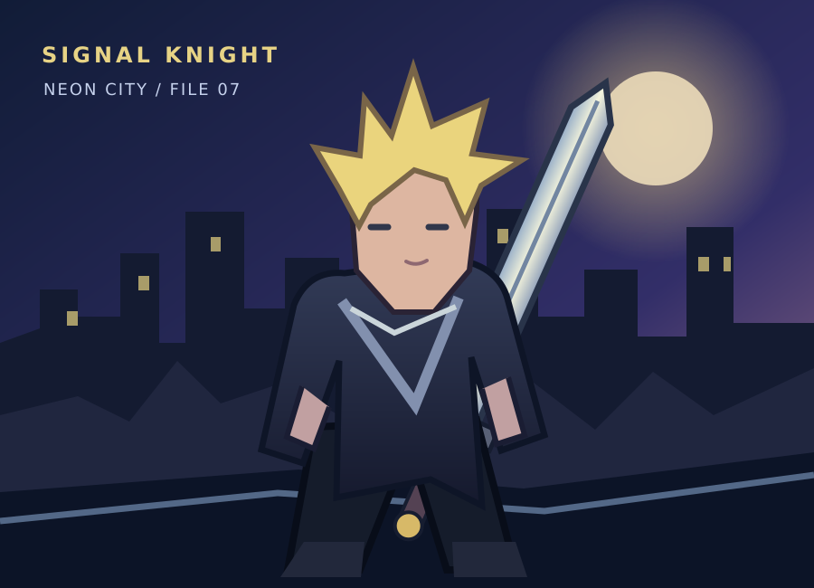

Who am I?
My name is Richie Vale. During the day, I am a university student in Neon City. At night, I help people when the city's power and communication systems stop working. People started calling me the Signal Knight. I never asked for the name, but it stuck.

This is me with my sword above Neon City.
My origin story
One night, the power went out across the city. I was walking home from class when I heard a broken emergency signal coming from an underground station. I followed it and helped a group of people find their way out. After that, I built a sword out of old electronic parts. My friend named it the Deadline Breaker. It sounds dramatic, but I kept the name.
My skills
- Signal Sense: I can pick up distress signals when most devices stop working.
- Static Shield: I can store electricity and use it to protect someone for a short time.
- Circuit Break: I can use my sword to stop a dangerous machine.
- Planning ahead: I know the shortcuts and safe routes around the city.
Why should you care?
If another blackout happens, I want people to know someone is still listening for their calls. You can read more about me in my classified file.